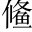

晉侯靈公。合諸侯於扈戶。○扈，鄭地。，平宋也平宋亂以立文公。。於是晉侯不見鄭伯穆公。，以為貳於楚也以其有二心於楚，故不與相見。。
鄭子家公子歸生。使執訊而與之書執訊，通訊問之官。，以告趙宣子晉卿趙盾。，曰下皆書辭。:「寡君即位三年，召蔡侯莊公。而與之事君君，晉襄公。。九月，蔡侯入於敝邑以行。敝邑以侯宣多鄭大夫。之難去聲。○侯宣多以援立穆公之故，恃寵專權而作亂。，寡君是以不得與蔡侯偕。十一月，克減侯宣多克減，少除其難也。，而隨蔡侯以朝潮。於執事踵蔡莊公朝晉之後，即來朝也。○朝襄一。。十二年六月，歸生子家自稱名。佐寡君之嫡夷鄭太子名夷。，以請陳侯共公。於楚，而朝諸君陳共公將朝晉而畏楚，故歸生輔太子夷，先為請命於楚。君，晉靈公。○朝靈二。。十四年七月，寡君又朝以蕆諂。陳事蕆，成也。鄭穆又親朝，以成往年陳共之好。○朝靈三。。十五年五月，陳侯靈公。自敝邑往朝於君陳靈新即位，自鄭入朝。○朝靈四。。往年正月，燭之武鄭大夫。往朝夷也燭之武又輔太子夷往朝於晉。「往朝夷」三字是倒語。○朝靈五。。八月，寡君又往朝鄭穆又親朝。○朝靈六。○已上敘朝晉之數，敘朝晉之年，敘朝晉之月，敘朝晉之人。真是賬簿皆成妙文。下復結算一通，妙，妙。。以陳、蔡之密邇於楚，而不敢貳焉，則敝邑之故也陳、蔡之朝，皆鄭之功。○結上召蔡侯、請陳侯、往朝君三事。。雖敝邑之事君，何以不免無論陳、蔡，雖以鄭自己事晉而言，何以不免於罪？○百忙中復作此二語，以起下二層意，何等委婉。？在位之中，一朝於襄，而再見現。於君結上隨蔡侯蕆陳事，又往朝三事。。夷與孤之二三臣相及於絳夷，鄭太子。孤，謂君也。二三臣，謂燭之武及子家自謂。絳，晉都邑。相及於絳，謂朝晉不絕也。○結上歸生佐夷、燭之武往朝夷二事。。雖我小國，則蔑以過之矣鄭雖小國，其事晉無以過之矣。○又總結一筆，遒緊。。今大國曰：「爾未逞吾志逞，快也。○只一句點題。。」敝邑有亡，無以加焉鄭國唯有滅亡而已，不能復加其事晉之禮也。○八字激切而沉痛。下乃引古人成語，曲曲轉出不能復事晉意。。古人有言曰：「畏首畏尾，身其餘幾上聲。○既畏首，又畏尾，則身之不畏者，有幾何哉？? 」又曰：「鹿死不擇音同「蔭」。○鹿將死，不暇擇庇廕之所。。」小國之事大國也，德，則其人也；不德，則其鹿也德，恩恤也。言以人視我，我還是人；以鹿視我，我便是鹿。○奇思創解。。鋌挺。而走險，急何能擇鋌，疾走貌。鹿知死而走險，何暇擇蔭？國知危而事大，何暇擇鄰？皆由急則生變也。？命之罔極，亦知亡矣晉命過苛，無有窮極。事之亦亡，叛之亦亡，鄭已知之矣。○「亡」字呼應。，將悉敝賦以待於酬。，唯執事命之賦，兵也。。文公二年，朝於齊。四年，為，晉鄭之境。言將盡起鄭兵，以待於齊侵蔡，亦獲成於楚地，唯聽晉執事之命令也。○收緊敵晉意。。居大國之間，而從於強令，豈其罪也去聲。？大國若弗圖，無所逃命鄭文公二年，朝於齊桓公。後復從齊侵蔡，蔡屬楚而鄭為齊侵之。宜獲罪於楚，而反獲成。○晉責鄭貳於楚，忽反寫楚之寬大以諷晉。奇妙。。」
晉鞏拱。朔晉大夫。行成於鄭，趙穿晉卿。、公婿池晉侯女婿。為質至。焉晉見鄭之詞強，故使鞏朔行成。而趙穿、公婿池為質於鄭以示信。此以見晉之失政，而霸業之衰也。。
前幅寫事晉唯謹，逐年逐月算之，猶為兢兢畏大國之言。後幅寫到晉之不知恤小，鄭亦不能復耐，竟說出貳楚亦勢之不得不然，晉必欲見罪，我亦顧忌不得許多。一團憤懣之氣，令人難犯，所以晉人竟為之屈。